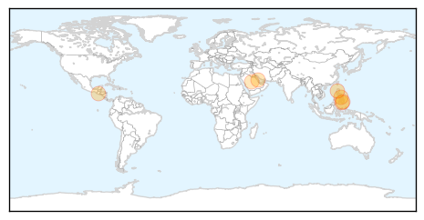
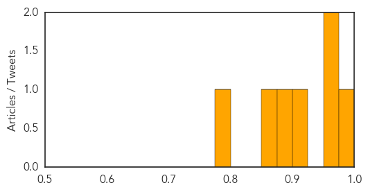
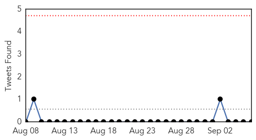
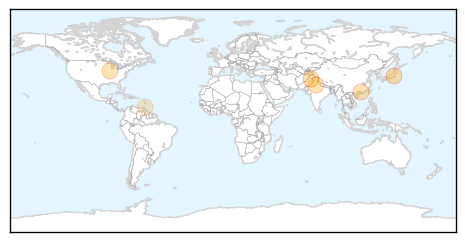

MERS
30-Day Web Trend
2 alerts, 0 warnings

30-Day Twitter Trend
1 alerts, 0 warnings

Article Locations
Article Confidences
Top Articles:
- 0.983
- INGAT PO! POEA lists 9 precautions vs MERS-CoV for on-site OFWs plus 3 for returning OFWs
- 0.969
- Cebu News, The Freeman Sections, The Freeman
- 0.964
- Nurse from Saudi cleared of MERS-CoV
- 0.912
- Filipina nurse tests negative for MERS virus, ‘the Philippines remains to be MERS-CoV-free’: DOH
- 0.884
- Pilgrims urged to take necessary vaccines two weeks prior to travel
- 0.855
- Filipina nurse from Saudi tests negative for MERS
- 0.785
- Filipina nurse negative for Mers
Top Tweets:
-
No tweets found for Sep 06, 2014
Dengue Fever
30-Day Web Trend
0 alerts, 0 warnings

30-Day Twitter Trend
0 alerts, 0 warnings

Article Locations
Article Confidences

Top Articles:
- 0.988
- Dengue fever strikes man who has never been to Yoyogi, Shinjuku parks
- 0.965
- On its way out?: Waiting on nature to combat dengue
- 0.962
- Biting issue: Three test positive for dengue in Pindi
- 0.929
- Waterborne ailments on rise in Ghaziabad
- 0.909
- Dengue fever in Guangdong
- 0.893
- Respiratory virus sickens hundreds of children
- 0.610
- Mosquitoes terrorising Flagstaff
- 0.577
- DENGUE, CHIK V IN MORVANT
Top Tweets:
-
No tweets found for Sep 06, 2014